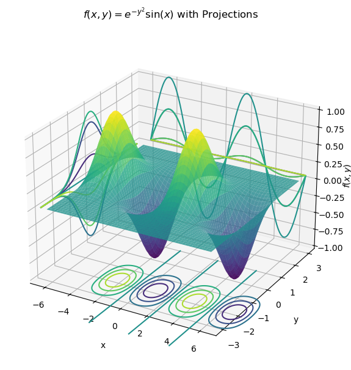

B1.1 Partial Derivatives#
B1.1.1 Why Partial Derivatives?#
In Phases D and C, we workedwith single-variable functions. For example, in electrostatics we found the electric field from the electric potential in one dimension as:
If \(V(x)\) describes how potential changes along a line, then \(-dV/dx\) gives the electric field along that line.
Moving Beyond 1D#
But in real physical systems, quantities depend on several variables:
Electric potential in space: \(V(x, y, z)\)
To ask “How does \(V\) change if I move a little bit in the \(x\)-direction while staying at the same \(y\) and \(z\)?”, we need a new kind of derivative.
The Key Idea#
A partial derivative measures how a multivariable function changes when we vary one variable, keeping all others constant:
It is just like the ordinary derivative, except that all other variables are treated as fixed parameters.
One may say:
“The partial derivative is the slope of the function if you move only along one coordinate direction, keeping the others fixed.”
We label this “directional” derivative using partial derivative symbol”, or curly d, or funky d, or curved d. In physics, it is sometimes referred to as del as it is a main component of the del operator.
B1.1.2 Conceptual Meaning#
In the previous notes, we encountered integration of more than one variable through line integrals. This time, we will explore derivatives when a function depends on more than one independent variable. For graphical simplicity, we will restrict ourself to two independent variables \(x\) and \(y\) and consider a function \(f(x,y)\). An example of such a function is shown in the figure below where the vertical axis represents

Also shown in this plot are the projections onto the \(x-f\), \(y-f\), and \(x-y\) planes, respectively, for a number of cross-sections (not shown). For example, a single profile in the \(x-f\) plane represent a cross section of the function in that plane for a given value of \(y\) (that is, \(y\) = constant).
Hence, the projection is our familiar single-variable function, and we know how to take the derivative of such a function. Let us consider the projection for \(y = 0\):
The derivative of this function is
In other words, we know how the function \(f(x,y)\) changes along \(x\) if \(y = 0\).
In hindsight, it would have been more appropriate to write the above derivatives as:
Box 1
Considering the function above, what is the derivative of \(f(x,y = 1)\) with respect to \(x\)?
B1.1.3 Partial Derivative Notation#
We should notice by now, that in the derivatives above, we have just treated \(y\) as a constant. This is our partial derivative. The partial derivative of a function is a measure of how the function varies as a function of one variable while the other variable(s) remains constant. We use a slightly different notation to express partial derivatives as expressed at the beginning of this note:
Example 1
What is the partial derivative of \(f(x,y) = \textrm{e}^{-y^2}\sin(x)\) with respect to \(x\)?
Answer#
Since we are considering \(y\) to be a constant, our exponential factor is simply treated as a constant value. The partial derivative with respect to \(x\) is then
Box 2
What is the partial derivative of \(f(x,y) = e^{-y^2}\sin(x)\) with respect to \(y\)?
Box 3
A function is given by \(f(x,y) = xy^2 - 2y\). Find the partial derivatives with respect to \(x\) and \(y\).
Box 4
A function is given by \(f(x,y) = \frac{y^2}{x^3}\). Is the function increasing or decreasing at \((x,y) = (2,3)\) and at what rates?
if \(x\) is varying and \(y\) is fixed.
if \(y\) is varying and \(x\) is fixed.
B1.1.4 Vector Operators: Gradient and Curl#
Gradient#
From Box 4, we saw that at a single point of the function, we could assign two different slopes depending on which direction we considered. This is similar to when you are hiking a hill or mountain. You may consider the slope in one direction, but turn to another direction and the slope is different. The fact that we can assign a a slope to a direction, implies that we are talking about a vector. This vector is known as the gradient, and we define the gradient of a function \(f(x,y,z)\) as
Of course, if we are considering three spatial dimensions, we would add a \(z\) term. Here we introduced the symbol nabla for the differential operator (named del):
which you are likely to become quite familiar with in this course.
Curl#
The curl of a vector field is related to the rotation or circulation of a vector field. We will not get into the conceptual meaning of it yet, but simply define it.
The curl of a vector field \(\vec{f}\) is defined as
Box 5
A function is given by \(f(x,y) = x^2 + y^2\). Find the gradient of this function and evaluate it at a point \(P = (2,3)\)
B1.1.5 Applications: Conservative Force and Potential Energy#
From Physics I, we learned that if a force is conservative, then we could assign a scalar function to that force, which we called the potential energy. There existed a derivative relations between the conservative force \(F\) and the potential energy \(U\):
We only learned the one-dimensional version of it, but now we are ready for the grown-up version.
Conservative Force#
A force is conservative if
Potential Energy#
The potential energy associated with a conservative force is defined through
Box 6
Consider a potential energy function given by \(U(x,y) = k(x^2 + y^2)\) (a spring stretched in the \(xy\)-plane). Find the force associated with this function.
Box 7
Consider a potential energy function given by \(U(x,y,z) = 5x +2y^2 + z^3\). Find the force associated with this function.
Box 8
Consider a potential energy function given by \(U(x,y) = -k \left(\frac{1}{x} + \frac{1}{y} \right)\), where \(k\) is a constant. Find the force associated with this function.
Box 9
Which of the following forces are conservative? If conservative, find the potential energy \(U(r)\).
\(\vec{F} = (ayz + bx + c)\hat{i} + (axz + bz)\hat{j} + (axy + by)\hat{k}\)
\(\vec{F} = (-z\textrm{e}^{-x})\hat{i} + \textrm{ln}(z)\hat{j} + (\textrm{e}^x + y/z)\hat{k}\)
(\(a\), \(b\), \(c\) are constants).